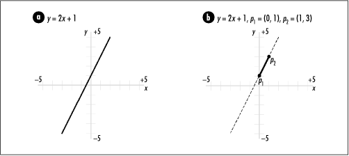

17.1 Description of Testing Whether
Line Segments Intersect
One fundamental problem in
computational geometry is determining whether two line segments intersect. Line
segments are lines that have a beginning and an end. The
points that define either end are a line segment's endpoints.
To determine whether two line segments intersect, we first
need to understand a little about lines and line segments in
general.
One representation
of a line is point-intercept
form , or y =
mx + b, where m is the line's slope and b is where the line crosses the y-axis. Using this, for any value of
x, we can compute a
corresponding value for y (see
Figure
17.1a). For a line segment with endpoints p1 = (x1, y1) and p2 = (x2, y2), the slope m and y-intercept b
are calculated by applying the following formulas:
Using m and
b, the line segment is
represented as a line in point-intercept form with endpoints
p1 and p 2 understood (see Figure
17.1b).

17.1.1 Standard Test for
Intersecting Line Segments
One way to
determine whether two line segments intersect is first to
determine the intersection point pi = (xi
, y i ) of the two lines on which each
segment lies, then determine whether pi is on both segments. If pi is on both segments, the line
segments intersect. We start with the point-intercept
representations of the two lines on which the segments lie,
which are:
The following formulas are used to compute
pi = (xi , y
i ). Notice that one special
case we must avoid when computing xi is two lines with slopes that are
equal. In this case, the denominator in the expression for
xi becomes 0. This occurs when
two lines are parallel, in which case the segments will not
intersect unless they lie on top of one another to some
extent.
Once we've computed pi, we perform the following tests to
determine whether the point is actually on both line segments.
In these tests, p1 =
(x1, y1) and p2 = (x2, y2) are the endpoints of
one line segment, and p3 = (x3, y3) and p4 = (x4, y4 ) are the endpoints of
the other. If each of the tests is true, the line segments
intersect.
This approach is common for determining
whether line segments intersect. However, because the division
required while calculating xi
is prone to round-off error and precision problems, in
computing we take a different approach.
17.1.2 Computer Test for
Intersecting Line Segments
In computing, to determine whether two lines
intersect, a two-step process is used: first, we perform a quick rejection test. If this test
succeeds, we then perform a straddle
test. Two line segments intersect only when the quick
rejection test and straddle test both
succeed.
We begin the quick
rejection test by constructing a bounding box around each line segment. The bounding
box of a line segment is the smallest rectangle that surrounds
the segment and has sides that are parallel to the x-axis and y-axis. For a line segment with
endpoints p1 =
(x1, y1) and p2 = (x2, y2), the bounding box is
the rectangle with lower left point (min(x1, x2), min(y1, y2)) and upper right point
(max(x1, x2), max(y1, y2)) (see Figure
17.2). The bounding boxes of two line segments intersect
if all of the following tests are true:
If the bounding boxes of the line segments
intersect, we proceed with the straddle test. To determine
whether one segment with endpoints p1 and p 2 straddles another with
endpoints p 3 and
p 4, we compare the
orientation of p
3 relative to p
2 with that of p4 relative to p 2 (see Figure
17.2). Each point's orientation conveys whether the point
is clockwise or counterclockwise from p 2 with respect to p1. To determine the
orientation of p 3
relative to p 2 with
respect to p1, we
look at the sign of:
z1 = (
x3 - x1 ) ( y2 -
y1 ) - ( y3 - y1 ) (
x2 - x1 )
If z1 is positive, p 3 is clockwise from
p 2. If z1 is negative, p 3 is counterclockwise
from p 2. If it is
0, the points are on the same imaginary line extending from
p1. In this case,
the points are said to be collinear.
To determine the orientation of p4 relative to p 2 with respect to p1, we look at the sign
of:
z2 = (
x4 - x1 ) ( y2 -
y1 ) - ( y4 - y1 ) (
x2 - x1 )
If the signs of z1 and z2 are different, or if
either is 0, the line segments straddle each other. Since if
we perform this test, we have already shown that the bounding
boxes intersect, the line segments intersect as well.
Figure
17.2 illustrates testing whether various pairs of line
segments intersect using the quick rejection and straddle
tests. The equations just given come from representing the
line segments from p1 to p 3, p1 to p 2, and p1 to p4 as vectors U, V,
and W (see the related topics
at the end of the chapter) and using the signs of the z-components of the cross products
U x V and W x V
as gauges of orientation.
|